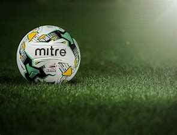

News

Chadzilla Football Society
=
Home
Stats
Standings
News/Rumours
Club of the month
Feedback
Events
Members
Images
Contact us
News And Rumours
Live updates from footballs best journalists, on everything from injuries to transfers.
Tweets by sistoney67
Tweets by David_Ornstein
Tweets by FabrizioRomano
SPFL
EPL
Europe